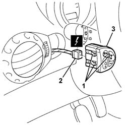

5560B56 PANEL WITH MULTIFUNCTION DISPLAY AND HEADLAMP ALIGNMENT SWITCHES BUTTONS R R
- Path
- Procedures > 55 ELECTRICAL EQUIPMENT > 5560 INSTRUMENTS > 5560B ANALOGUE CONTROL PANEL > 5560B56 PANEL WITH MULTIFUNCTION DISPLAY AND HEADLAMP ALIGNMENT SWITCHES BUTTONS R R
- Kind
- repair procedure (removal / refitting; the operation number is the code)
- Applies to
- all engines; all production periods
- Interactive page
- https://sloeber94.github.io/elrnDB-aGt/en/#/125001708
Applies to: all engines; all production periods
 Removing
Removing
 Refitting
Refitting1. Release the retainers for the switch panel from the dashboard trim.
2. Disconnect the electrical connection.
Name | Connector | |
|---|---|---|
2 | Controls for headlamp alignment instrument lighting adjustment | See H10 CONTROLS FOR HEADLAMP ALIGNMENT INSTRUMENT LIGHTING ADJUSTMENT ( FACIA ) |
3. Recover the switch panel.

Applies to: all engines; all production periods
Refitting
RemovingCheck that the switch unit is undamaged.
Connect the electrical connection.
Fit the switch panel in the dashboard trim.
Check the devices are working properly.
Topics that link to this page (15)
- I80 HEADLAMP ALIGNMENT CORRECTOR NOT WORKING
- K06 TRIP METER DOES NOT ZERO
- K15 CLOCK NOT WORKING
- K91 INSTRUMENT LIGHTS / LIGHTING DIMMER NOT WORKING
- 5040A80 EXPANSION/CONNECTION PIPE - R R
- 5040B30 EXPANSION VALVE (TUBE ORIFICE) - R+R
- 5040C50 AIR CONDITIONER HEATER RADIATOR - R+R
- 5040C64 A/C MANUAL CONTROL SWITCH (ONE) - R+R
- 5040D76 AIR CONTITIONER DISTRIBUTION FLAP CONTROL MOTOR - R R
- 5040D84 AIR CONDITIONER LEFT HAND AIR MIXER FLAP CONTROL MOTOR - R R
- 5040D86 AIR CONDITIONER RIGHT HAND AIR MIXER FLAP CONTROL MOTOR - R R
- 5040D90 AIR CONDITIONER SYSTEM WIRING BUNDLE - R R
- 5505C34 INTERGRATED INSTRUMENT UNDER FACIA FRONT AIR BAG WIRING - R R
- 7040A10 L/H OR R/H FRONT SEAT (ONE) - R+R
- 7040A97 FACIA TRIM SUPPORT BEAM - R R